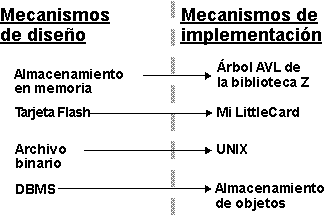
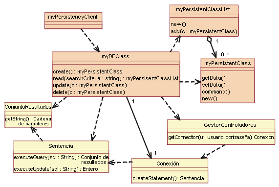
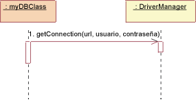
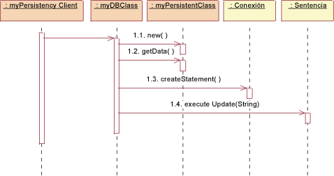
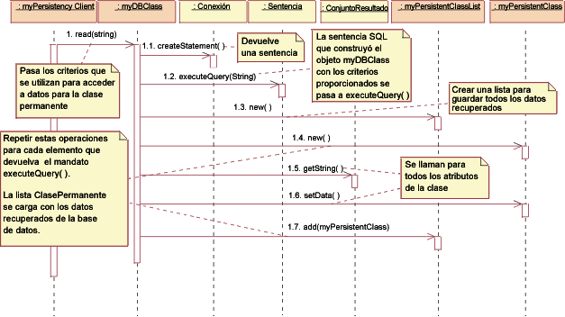
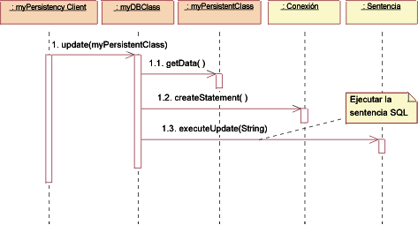
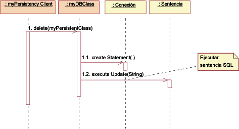

| Concepto: Mecanismos de implementación y diseño |
 |
|
| Elementos relacionados |
|---|
Introducción a los mecanismos de implementación y diseñoUn mecanismo de diseño es un perfeccionamiento de un mecanismo de análisis correspondiente (consulte también el apartado Concepto: Mecanismos de análisis). Un mecanismo de diseño añade detalles concretos al mecanismo de análisis conceptual, pero se detiene antes de solicitar una tecnología determinada; por ejemplo, la implementación de un proveedor particular de un sistema de gestión de bases de datos orientadas a objetos. Al igual que con los mecanismos de análisis, un mecanismo de diseño puede crear instancias de uno o varios patrones, en este caso de arquitectura o patrones de diseño. De la misma manera, un mecanismo de implementación es un perfeccionamiento de un mecanismo de diseño correspondiente que utiliza, por ejemplo, un lenguaje de programación determinado y otra tecnología de implementación (como un producto de middleware de un proveedor particular). Un mecanismo de implementación puede crear instancias de uno o varios giros o patrones de implementación. Ejemplo: Características de los mecanismos de diseñoConsidere el mecanismo de análisis para Permanencia:
Estos objetos requerirán un soporte de permanencia diferente; se pueden identificar las siguientes características de mecanismos de diseño para el soporte de permanencia:
Tenga en cuenta que estas velocidades se califican como 'lentas' en relación con el almacenamiento en memoria. Obviamente, en algunos entornos, el uso de la antememoria puede mejorar los tiempos de acceso aparentes.
Perfeccionamiento de la correlación entre los mecanismos de implementación y diseñoInicialmente, es probable que la correlación entre mecanismos de diseño y mecanismos de implementación no sea óptima, pero pondrá el proyecto en ejecución, identificará los riesgos que todavía no se han identificado y desencadenará más investigaciones y evaluaciones. A medida que el proyecto avanza y se obtienen más conocimientos, debe perfeccionarse la correlación. Actúe de forma repetitiva para perfeccionar la correlación entre los mecanismos de diseño e implementación; para ello, elimine las vías de acceso redundantes y trabaje "de arriba abajo" y "de abajo arriba". Trabajo de arriba abajo. Cuando se trabaja "de arriba abajo", las realizaciones de guiones de uso nuevas y perfeccionadas establecerán nuevos requisitos para los mecanismos de diseño necesarios mediante los mecanismos de análisis necesarios. Es posible que estos requisitos nuevos revelen características adicionales de un mecanismo de diseño, que fuercen una división entre mecanismos. También existe un compromiso entre la complejidad del sistema y su rendimiento:
Trabajo de abajo arriba. Cuando se trabaja "de abajo arriba", investigando los mecanismos de implementación disponibles, se pueden encontrar productos que satisfagan varios mecanismos de diseños a la vez, pero que obliguen a adaptar o volver a particionar los mecanismos de diseño. Es recomendable minimizar el número de mecanismos de implementación utilizados, aunque son pocos los que puede causar problemas de rendimiento. Cuando decida utilizar un DBMS para almacenar objetos de clase A, puede sentirse tentado a utilizarlo para almacenar todos los objetos del sistema. Pero esto podría ser ineficaz o, incluso, muy engorroso. No todos los objetos que requieren permanencia necesitan almacenarse en el DBMS. Puede que algunos objetos sean permanentes, pero que la aplicación acceda a ellos con frecuencia y otras aplicaciones sólo accedan ocasionalmente. Posiblemente la mejor propuesta sea una estrategia híbrida en la que el objeto se lea desde el DBMS a la memoria y se sincronice periódicamente. Ejemplo Un vuelo se puede almacenar en la memoria para un acceso rápido y en un DBMS para una permanencia a largo plazo; sin embargo, esto desencadena la necesidad de un mecanismo para sincronizar ambos. Es bastante común tener más de un mecanismo de diseño asociado con una clase de cliente como un compromiso entre características diferentes. Dado que los mecanismos de implementación suelen proporcionarse en paquetes de componentes asequibles (sistemas operativos y productos de middleware), es necesario algún tipo de optimización basada en el coste, la no coincidencia de la impedancia o la uniformidad de estilo. Además, los mecanismos suelen ser interdependientes, lo que dificulta una clara separación de servicios en mecanismos de diseño. Ejemplos
El perfeccionamiento continúa durante toda la fase de elaboración y siempre es un compromiso entre:
El objetivo general siempre es tener un conjunto simple de mecanismos que proporcionen integridad conceptual, simplicidad y elegancia a un sistema grande. Ejemplo: Correlación de mecanismos de diseño con mecanismos de implementaciónLos mecanismos de diseño de Permanencia se pueden correlacionar con mecanismos de implementación como se muestra a continuación:  Una posible correlación entre mecanismos de análisis y mecanismos de diseño. Las flechas punteadas significan "está especializado en", es decir, que las características de los mecanismos de diseño se heredan de los mecanismos de análisis, pero se especializarán y perfeccionarán. Una vez que haya terminado de optimizar los mecanismos, habrá la siguiente correlación:
La correlación debe ser navegable en las dos direcciones, de forma que sea fácil determinar las clases de cliente cuando se cambian los mecanismos de implementación. Descripción de los mecanismos de diseñoLos mecanismos de diseño y los detalles sobre su utilización se documentan en el apartado Producto de trabajo: Directrices específicas del proyecto. La relación (o correlación) de los mecanismos de análisis con los mecanismos de diseño y los mecanismos de implementación, y el fundamento asociado a estas elecciones, se documenta en el apartado Producto de trabajo: Documento de arquitectura de software. Al igual que los mecanismos de análisis, los mecanismos de diseño se pueden modelar mediante una colaboración, que puede crear instancias de uno o varios patrones de arquitectura o de diseño. Ejemplo: un mecanismo de permanenciaEste ejemplo utiliza una instancia de un patrón para la permanencia basada en RDBMS extraída de JDBC™ (Conectividad de base de datos de Java). A pesar de que aquí presentamos el diseño, JDBC proporciona código real para algunas clases, por lo que hay una pequeña diferencia entre lo que se muestra aquí y un mecanismo de implementación. La vista estática de la figura: JDBC muestra las clases (estrictamente, los roles clasificadores) de la colaboración.  Vista estática: JDBC Las clases que aparecen en amarillo son las que se proporcionaron, las otras (myDBClass, etc.) las impuso el diseñador para crear el mecanismo. En JDBC, un cliente trabajará con una clase DBClass para leer y escribir datos permanentes. La clase DBClass es responsable del acceso a la base de datos JDBC mediante la clase GestorControladores. Una vez que se haya abierto una Conexión con la base de datos, la clase DBClass puede crear sentencias SQL que se enviarán al RDBMS subyacente y se ejecutarán mediante la clase Sentencia. La clase Sentencia es la encargada de "hablar" con la base de datos. El resultado de la consulta SQL se devuelve en un objeto ConjuntoResultado. La clase DBClass es la responsable de convertir otra instancia de clase en permanente. Esta clase conoce la correlación de OO con RDBMS y tiene el comportamiento para interactuar con el RDBMS. La clase DBClass presenta el objeto de manera simultánea, lo escribe en el RDBMS, lee los datos del objeto del RDBMS y construye el objeto. Todas las clases permanentes tendrán una clase DBClass correspondiente. La clase ListaClasesPermanentes se utiliza para devolver un conjunto de objetos permanentes como un resultado de una consulta de la base de datos (p.ej., DBClass.read()). A continuación, presentamos una serie de vistas dinámicas que muestran cómo funciona el mecanismo en realidad.  JDBC: Inicializar La inicialización debe producirse para poder acceder a cualquier clase permanente. Para inicializar la conexión con la base de datos, la clase DBClass debe cargar el controlador adecuado llamando a la operación DriverManager getConnection() con un URL, un usuario y una contraseña. La operación getConnection() intenta establecer una conexión con el URL de la base de datos dada. El gestor de controladores intenta seleccionar un controlador adecuado del conjunto de controladores JDBC registrados. Parámetros: URL: el URL de una base de datos con el formato jdbc:subprotocol:subname. Este URL se utiliza para ubicar el servidor de bases de datos real y no está relacionado con la web en esta instancia. usuario: el usuario de la base de datos en nombre del que se establece la conexión contraseña: la contraseña del usuario Devuelve: una conexión con el URL.  JDBC: Crear Para crear una clase nueva, el cliente de permanencia pide a la clase DBClass que cree la clase nueva. La clase DBClass crea una instancia nueva de ClasePermanente con valores por omisión. Entonces, la clase DBClass crea una Sentencia nueva mediante la operación createStatement() de clase Conexión. La Sentencia se ejecuta y los datos se insertan en la base de datos.  JDBC: Leer Para leer una clase persistente, el cliente de permanencia pide a la clase DBClass que lea. La clase DBClass crea una Sentencia nueva mediante la operación createStatement() de clase Conexión. La Sentencia se ejecuta y los datos se devuelven en un objeto ConjuntoResultado. Entonces, la clase DBClass crea una instancia nueva de la clase ClasePermanente y la llena con los datos recuperados. Los datos se devuelven en un objeto de recopilación, una instancia de la clase ListaClasesPermanentes. Nota: la cadena de caracteres que se pasa a executeQuery() no tiene por qué ser exactamente la misma cadena de caracteres que la que se pasa a read(). La clase DBClass construirá la consulta SQL para recuperar los datos permanentes de la base de datos, utilizando los criterios que se pasan a read(). Esto se debe a que no es deseable que el cliente de la clase DBClass tenga que conocer las características esenciales de la base de datos para crear un consulta válida. Este conocimiento se encapsula en la clase DBClass.  JDBC: Actualizar Para actualizar una clase, el cliente de permanencia pide a la clase DBClass que actualice. La clase DBClass recupera los datos del objeto ClasePermanente dado y crea una Sentencia nueva mediante la operación createStatement() de la clase Conexión. Una vez que se haya construido la Sentencia, se ejecuta la actualización y se actualiza la base de datos con los datos nuevos de la clase. Recuerde: la clase DBClass es la encargada de "presentar simultáneamente" la clase ClasePermanente y escribirla en la base de datos. Este es el motivo por el que se debe recuperar de la clase ClasePermanente dada antes de crear la sentencia SQL. Nota: en el mecanismo anterior, la clase ClasePermanente debe proporcionar rutinas de acceso para todos los datos permanentes, de forma que la clase DBClass pueda acceder a ellos. Esta acción proporciona acceso externo a determinados atributos permanentes que, de lo contrario, serían privados. Este es el precio que hay que pagar para extraer el conocimiento de permanencia de la clase que encapsula los datos.  JDBC: Suprimir Para suprimir una clase, el cliente de permanencia pide a la clase DBClass que suprima la clase ClasePermanente. La clase DBClass crea una Sentencia nueva mediante la operación createStatement() de clase Conexión. La Sentencia se ejecuta y los datos se eliminan de la base de datos. En la implementación de este diseño, deben tomarse varias decisiones sobre la correlación de la clase DBClass con las clases permanentes, por ejemplo, tener una clase DBClass por cada clase permanente y asignarlas a los paquetes correspondientes. Estos paquetes tendrán una dependencia del paquete java.sql (consulte la Documentación de la API JDBC™) proporcionado que contiene las clases de soporte GestorControladores, Conexión, Sentencia y ConjuntoResultado. |
© Copyright IBM Corp. 1987, 2006. Reservados todos los derechos. |